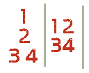

In the previous lesson you learned more letters and saw tables of syllables built by matching consonants with vowels.
This final lesson of Unit 0 covers the remaining vowels you need to read Korean. Most of them are “diphthongs”, which just means two vowels in one. After this you can start applying the letters to words and simple sentences.
All of the letters in this lesson are based on vowels you already know. You should remember these:
Adding one extra line to each of those vowels gives four more vowels. The extra line adds a ‘Y’ sound:
Syllables made with these new vowels look like this:
Two more common vowels are:
These two vowels have different Romanizations but sound identical. Both sound like “eigh” in “weigh”.
Officially (and historically), ㅐ and ㅔ are pronounced differently. In practice, any Korean speaker or teacher will pronounce them identically and tell you they sound the same. Teachers may add that the distinction existed long ago but has disappeared from modern pronunciation. For a learner, the sounds are identical.
Syllables made with these new letters look like this:
Practice reading “ㅐ” with different starting consonants:
애, 배, 재, 대, 개, 새, 매, 내, 해, 래
Now “ㅔ” with the same consonants:
에, 베, 제, 데, 게, 세, 메, 네, 헤, 레
(ㅐ and ㅔ sound exactly the same in modern Korean.)
The remaining vowels are each made by putting two vowels together, and the pronunciation is simply the two vowel sounds combined. For example:
위, 뷔, 쥐, 뒤, 귀, 쉬, 뉘
워, 붜, 줘, 둬, 궈, 숴, 눠
외, 뵈, 죄, 되, 괴, 쇠, 뇌
와, 봐, 좌, 돠, 과, 솨, 놔
의, 븨, 즤, 듸, 긔, 싀, 늬
Apart from “의,” you will rarely if ever hear these syllables in Korean. Even native speakers find “븨, 즤, 듸, 긔, 싀, 늬” awkward to say. The pronunciation of ㅢ is covered in more depth in the Pronunciation Lesson of this Unit.
예, 계, 혜
(Other examples such as “셰, 졔, 볘,” are left out because you will almost never hear them. The recorded syllables are far more common.)
Notice that with these “double vowels” the first consonant goes on top of the horizontal letter and to the left of the vertical letter at the same time. For example:
쥐, 의, 와, 괴
When there is no horizontal vowel, the first consonant simply goes to the left of the vertical vowel. For example:
배, 네, 예
There are three more vowels of this type, but they are much less common than anything taught so far. Learn them, but focus on the other letters first:
In this lesson you learned 15 more vowels, on top of the 6 vowels and 19 consonants from before. The table below shows all the Korean consonants and vowels and how they pair into syllables without a third consonant.
As before, the table is only to familiarize you with how syllables are formed. Do not memorize it.
| ㅣ | ㅏ | ㅓ | ㅡ | ㅜ | ㅗ | ㅑ | ㅕ | ㅠ | ㅛ | ㅐ | ㅔ | ㅟ | ㅝ | ㅚ | ㅘ | ㅢ | ㅖ | ㅙ | ㅒ | ㅞ | |
| ㅂ | 비 | 바 | 버 | 브 | 부 | 보 | 뱌 | 벼 | 뷰 | 뵤 | 배 | 베 | 뷔 | 붜 | 뵈 | 봐 | 븨 | 볘 | 봬 | 뱨 | 붸 |
| ㅈ | 지 | 자 | 저 | 즈 | 주 | 조 | 쟈 | 져 | 쥬 | 죠 | 재 | 제 | 쥐 | 줘 | 죄 | 좌 | 즤 | 졔 | 좨 | 쟤 | 줴 |
| ㄷ | 디 | 다 | 더 | 드 | 두 | 도 | 댜 | 뎌 | 듀 | 됴 | 대 | 데 | 뒤 | 둬 | 되 | 돠 | 듸 | 뎨 | 돼 | 댸 | 뒈 |
| ㄱ | 기 | 가 | 거 | 그 | 구 | 고 | 갸 | 겨 | 규 | 교 | 개 | 게 | 귀 | 궈 | 괴 | 과 | 긔 | 계 | 괘 | 걔 | 궤 |
| ㅅ | 시 | 사 | 서 | 스 | 수 | 소 | 샤 | 셔 | 슈 | 쇼 | 새 | 세 | 쉬 | 숴 | 쇠 | 솨 | 싀 | 셰 | 쇄 | 섀 | 쉐 |
| ㅁ | 미 | 마 | 머 | 므 | 무 | 모 | 먀 | 며 | 뮤 | 묘 | 매 | 메 | 뮈 | 뭐 | 뫼 | 뫄 | 믜 | 몌 | 뫠 | 먜 | 뭬 |
| ㄴ | 니 | 나 | 너 | 느 | 누 | 노 | 냐 | 녀 | 뉴 | 뇨 | 내 | 네 | 뉘 | 눠 | 뇌 | 놔 | 늬 | 녜 | 놰 | 냬 | 눼 |
| ㅎ | 히 | 하 | 허 | 흐 | 후 | 호 | 햐 | 혀 | 휴 | 효 | 해 | 헤 | 휘 | 훠 | 회 | 화 | 희 | 혜 | 홰 | 햬 | 훼 |
| ㄹ | 리 | 라 | 러 | 르 | 루 | 로 | 랴 | 려 | 류 | 료 | 래 | 레 | 뤼 | 뤄 | 뢰 | 롸 | 릐 | 례 | 뢔 | 럐 | 뤠 |
| ㅇ | 이 | 아 | 어 | 으 | 우 | 오 | 야 | 여 | 유 | 요 | 애 | 에 | 위 | 워 | 외 | 와 | 의 | 예 | 왜 | 얘 | 웨 |
| ㄲ | 끼 | 까 | 꺼 | 끄 | 꾸 | 꼬 | 꺄 | 껴 | 뀨 | 꾜 | 깨 | 께 | 뀌 | 꿔 | 꾀 | 꽈 | 끠 | 꼐 | 꽤 | 꺠 | 꿰 |
| ㅋ | 키 | 카 | 커 | 크 | 쿠 | 코 | 캬 | 켜 | 큐 | 쿄 | 캐 | 케 | 퀴 | 쿼 | 쾨 | 콰 | 킈 | 켸 | 쾌 | 컈 | 퀘 |
| ㅃ | 삐 | 빠 | 뻐 | 쁘 | 뿌 | 뽀 | 뺘 | 뼈 | 쀼 | 뾰 | 빼 | 뻬 | 쀠 | 뿨 | 뾔 | 뽜 | 쁴 | 뼤 | 뽸 | 뺴 | 쀄 |
| ㅍ | 피 | 파 | 퍼 | 프 | 푸 | 포 | 퍄 | 펴 | 퓨 | 표 | 패 | 페 | 퓌 | 풔 | 푀 | 퐈 | 픠 | 폐 | 퐤 | 퍠 | 풰 |
| ㅉ | 찌 | 짜 | 쩌 | 쯔 | 쭈 | 쪼 | 쨔 | 쪄 | 쮸 | 쬬 | 째 | 쩨 | 쮜 | 쭤 | 쬐 | 쫘 | 쯰 | 쪠 | 쫴 | 쨰 | 쮀 |
| ㅊ | 치 | 차 | 처 | 츠 | 추 | 초 | 챠 | 쳐 | 츄 | 쵸 | 채 | 체 | 취 | 춰 | 최 | 촤 | 츼 | 쳬 | 쵀 | 챼 | 췌 |
| ㄸ | 띠 | 따 | 떠 | 뜨 | 뚜 | 또 | 땨 | 뗘 | 뜌 | 뚀 | 때 | 떼 | 뛰 | 뚸 | 뙤 | 똬 | 띄 | 뗴 | 뙈 | 떄 | 뛔 |
| ㅌ | 티 | 타 | 터 | 트 | 투 | 토 | 탸 | 텨 | 튜 | 툐 | 태 | 테 | 튀 | 퉈 | 퇴 | 톼 | 틔 | 톄 | 퇘 | 턔 | 퉤 |
| ㅆ | 씨 | 싸 | 써 | 쓰 | 쑤 | 쏘 | 쌰 | 쎠 | 쓔 | 쑈 | 쌔 | 쎄 | 쒸 | 쒀 | 쐬 | 쏴 | 씌 | 쎼 | 쐐 | 썌 | 쒜 |
A syllable can also have four letters: one vowel and three consonants. The extra consonant is added as the third consonant. Using the same layout from Lesson 1, these syllables look like this:

With a horizontal vowel (ㅡ, ㅜ,ㅗ, ㅠ, ㅛ) the syllable looks like the structure on the left. With a vertical vowel (ㅣ, ㅓ, ㅏ, ㅕ, ㅑ) it looks like the structure on the right. Either way, the third consonant simply sits beside the second consonant. More complicated vowels (ㅝ, ㅘ, ㅢ, etc…) are technically possible here, in the sense that a computer can type them, but they are not used or very rarely used. When a word has a fourth letter, the vowel is almost always one of: ㅣ, ㅡ, ㅓ, ㅏ, ㅗ, ㅜ.Five of the most common examples of this fourth letter for a beginner are:
Pronouncing syllables with this fourth letter is a bit more complicated, because it changes depending on whether the next syllable starts with a vowel or a consonant. That is beyond this lesson and is covered in the Pronunciation Lesson of this Unit.
This “fourth letter” does not mean the complicated vowels (ㅘ, ㅝ, ㅐ, ㅚ, ㅞ, etc…). Treat each of those as one letter. So the syllable “관” has only three letters: ㄱ + ㅘ + ㄴ. The “fourth letter” means a third consonant.
Likewise, the “double” consonants from the previous lesson (ㅆ, ㄲ, ㅃ, ㄸ) count as one letter. So the syllable “있” has only three letters: ㅇ + ㅣ + ㅆ. A fourth letter is never added to a double consonant.
Now that you know every letter in the Korean alphabet, try making more syllables. The more you practice, the faster you will recognize the letters later.
You do not know any words yet, but you can read. So here is a short list of Korean words that are actually English words borrowed into Korean. See if you can read each one:
Want to try building some words from the letters in this lesson?
Round 1 | Round 2
Round 1 | Round 2 | Round 3